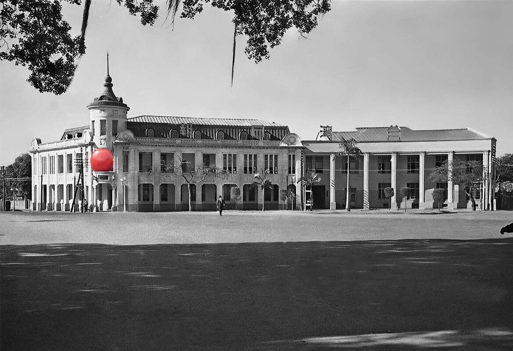

2024 年第三季度总结
这里记录下第三季度自己的一些想法，为了日后翻阅方便！
- 七月
- 认知努力
- 《太白金星有点烦》
- 《我胆小如鼠》
- 《一个叫欧维的男人决定去死》
- 八月
- 白糖为何是战略物资？
- 家暴只有一次和无数次
- 九月
- 奢侈是什么？
- 什么是我思故我在呢？
- 什么是形而上学呢？
七月
丁帆《消逝的风景》
旧日风景是旧时光的再现，在每一个历史的断面中，我们都可以看到不一般的风景，而如何解读它们，才是最重要的。风景中的人，是思想的芦苇；风景中的物，是人文话语的另一个倾诉者。所以，从某种意义上来说，风景也是个人自传的参照物——人看风景，风景照人——那是历史的回声，那是人性的呼唤。

一 认知努力
认知努力 —— 池塘柳
下班的时候，坐在车上或者地铁上，你是无意识地玩手机，还是看一篇讲心理学的文章呢？到家吃完饭，你是喜欢追剧，还是玩一个策略游戏呢？有些人有一种“认知努力”的偏好，他们喜欢锻炼自己的思考能力，比如喜欢玩数独、喜欢猜谜，或者喜欢研究心理学和数学，根据涉及不同程度的认知努力——花费的时间，钻研问题的难度，人与人之间表现出一种认知需求上的隐秘差异。
最近有一部叫《解释鸿沟》的纪录片，你可以从中看到哲学家和哲学专业的学生是怎样锻炼自己的认知能力的。相比较而言，有些人就是对认知有更高的需求，他们不那么容易变得沮丧，不那么轻易感到疲惫，而是更自信，但并不一定更聪明。他们享受的是学习和解决问题的过程。
从积极的方面来说，寻求和享受认知挑战的人在许多方面自我感觉更好。许多人倾向于陷入重复的，往往也是消极的心理循环中，但认知努力的人更有可能将他们的想法引向解决问题，以更健康的方式反思他们的经历。这种趋势会形成更稳定的自我意识，他们在各种环境下的焦虑程度更低，对社交互动更有信心。当一个具有认知努力特质的人面临一项非常苛刻、时间紧张的任务时，他们可能会特别有动力思考如何降低他们的压力水平，例如确定优先事项，将面临的困难评估为增长的机会。
然而，喜欢思考的人往往容易产生虚假的安全感。喜欢思考的人可能会吸收知识，甚至对自己解决问题的能力充满信心——实际上可能什么都不做。
如果你不回避努力思考，你可能会更有动力获得知识，思考问题，找到解决方案，并在生活的许多方面获得更高水平的幸福感。研究人员说，成年人对认知的需求不尽相同，我们不知道一个人对认知的需求水平是否可以提高，但有证据表明，自我控制和认知努力的偏好可能会相互影响，也就是说，你有自制力，你就会在思考上投入更多精力。你在认知上越努力，你的控制力就越强。从这个角度上讲，我们可以看看那些让我们失去自控力的东西都是什么，它们要毁掉的就是我们的认知努力。
二 太白金星有点烦
主要摘录一些阅读《太白金星有点烦》过程中，比较有意思的句子。
可李长庚知道，这事不能就这么算了。仙界讲究“道法自然”。什么叫自然？天压着地，高压着低，你忍让了一次，人家就会顺势蹬鼻子上脸，次次忍气吞声，你就会被欺负。
先断因果，才好忘情。
不对，不对。当初如果自己硬着心肠不管，赶六耳下界，他早早失望，也就没这事了。正是自己偶发善心，给了他虚假的希望，却又没办法解决，才导致这一场悲剧。不要去学吴刚伐桂，徒劳地砍了那么久，却一丝痕迹也没留下，到头来都是一场
“这点破事，我在五行山下花了五百年，总算琢磨明白了。这天地之道，无非就是大家替来换去，演来装去。我偷了六耳的命，别人又拿我的命去替罪；我演了这一场劫，又在更大的一场假劫之中。那篇揭帖说得也没错：我俩真的是一体两心，他是被镇前愤怒的我，我是死心后苟活的他。”
如今见证了孙悟空抛却凡躯，想透了玉帝与佛祖的用意，李长庚这才想透了那段提点的真解：超脱因果，不是不沾因果，而是只存己念；太上忘情，也不是无情无欲，而是唯修自身。一切以自身修行为念，不为下界之事动摇心旌。如此一来，因果可以沾而不染，情欲也可以挂而不碍，境界截然不同。
三 我胆小如鼠
主要摘录一些阅读《我胆小如鼠》过程中，比较有意思的句子。
- 文学中的现实
如果没有那些昏迷或者死亡的麻雀铺满了公路的描写，没有牛仔裤绷裂的描写，那么两辆卡车相撞和一个人从高楼跳下来的情景，即便是进入了文学，也是很容易被阅读遗忘，因为它们没有产生文学中的现实，它们仅仅是让现实事件进入了语言的叙述系统而已。如果没有这样的表达，叙述就会沦落为生活和事件的简单图解。这就是为什么生活和事件总是转瞬即逝，而文学却是历久弥新。
- 余华新版访谈录
我曾是千千万万个敏感怯懦的孩子中的一个，《我胆小如鼠》是我们共同的自传！
“死里逃生”的幸福感在我这里是一种比喻。当你一帆风顺的时候，获得的幸福感是转瞬即逝的，你会忘掉它的；但当你遇到一个重大的挫折，你原本以为自己很难度过它，甚至可能被这个挫折击垮的时候，你忽然发现自己战胜了它，这个时候获得的幸福感你会铭记一生。
在生活中也是这样，如果一个人一直在很幸福的环境里生活，那他往往会对幸福感到麻木；而当一个人不断遇到困难、挫折，他在困难消失、挫折被他打败的时候所品尝到的那种幸福感，往往才是真正的幸福，哪怕它只有很小一点儿。这就是我所说的那种“死里逃生”的幸福感，那是真正的幸福感，是我们人类最好的幸福。
我就很愿意承认我胆小如鼠，因为胆小如鼠是人的一个很好的出发点。这个时候，随着我们的胆子越来越大，我们将更敢于探索，敢于去做以前没有把握的事情，往往是没有把握的事情，可能会给我们带来一个全新的世界。
一个人如果小时候是“胆小如鼠”的人，他长大以后很可能会变成一个胆大包天的人；小时候胆大包天的那帮孩子，长大以后很可能都是胆小鬼。现在我跟我哥哥调了个位置，我变得胆子越来越大了，他却变得特别谨慎、胆小如鼠了。
人往往在顺利的时候，更愿意去面对自己失败的那些部分。如果一个人始终处于失败中，他大概率是不想面对失败的，所有人都一样。
但当我在获得胜利的时刻，我特别想去面对我失败的那些经历，因为觉得失败的经历特别美好。很奇怪，当你胜利以后再回想，你会觉得最难忘的是你那些失败的经历。这些失败的经历造就了你后来的成功。所以“失败是成功之母”这句老话说得一点儿都没错。
我们要改变这个世界，而不是仅仅停留在理解这个世界。我对我自己最满意的一点，就是我始终抱有我年轻时候的那份好奇心，我对什么事情都充满了好奇。对什么事情都想去了解，这是一个人能够继续往前走的一种必然的条件。
四 一个叫欧维的男人决定去死
如果死都不怕，还有什么值得去害怕的呢？
- 一个叫欧维的男人造了一幢房子
他发现自己很喜欢房子。可能主要是因为房子是可以理喻的，可以计算并在纸上画出来。不好好做防水就会漏，不好好做结构就会塌。房子是公平的，你付出多少，它就给你多少。很不幸的是，这些话很难用在人类身上。
- 一个叫欧维的男人和那个不从梯子上掉下来就开不了窗的盲流
生活不应该是现在这个样子。努力工作，还贷纳税，自食其力，然后结婚，同甘共苦，至死不渝，当初难道不是这样说好的吗？欧维清楚地记得当时立下的誓言。
- 一个叫欧维的男人有收获
每个人的生命中总有那么一刻决定他们将成为什么样的人。要是你不了解那个故事，就不了解那个人。
- 一个叫欧维的男人和一个没有他的社会
他认为，做人就要做有用的人。他从来都是有用的人，这是不争的事实。他做了一切社会需要他做的事。工作，从不生病，结婚，贷款，缴税，自食其力，开正经的车。社会是怎么报答他的？它冲进办公室让他卷铺盖回家，这就是报答。某个星期一，突然他就没用了。
- 一个叫欧维的男人和死神
死亡是一桩奇怪的事情。人们终其一生都在假装它并不存在，尽管这是生命的最大动机之一。我们其中一些人有足够时间认识死亡，他们得以活得更努力、更执着、更壮烈。有些人却要等到它真正逼近时才意识到它的反义词有多美好。另一些人深受其困扰，在它宣布到来之前就早早地坐进等候室。我们害怕它，但我们更害怕它发生在身边的人身上。对死亡最大的恐惧，在于它与我们擦肩而过，留下我们独自一人。时间是一桩奇怪的事情。大多数人只为了未来生活。
八月
既见未来，为何不拜！
我在埃及当刺客，在异世界当猎魔人，当猎龙者，当骑士，什么都当了。现在我终于看到一丝希望，我能回自己国家的异世界当猴哥。
一 白糖为何是战略物资？
主要是针对于早期的战争
白糖被认为是战略物资主要是因为其在多个方面的实用性和重要性：
能量来源：白糖是一种快速的能量来源，在紧急情况下或在战场上，它可以迅速为人体提供所需的能量。这对于维持士兵的体力至关重要。
长保质期：白糖的保存期限很长，在适当的条件下几乎不会变质，因此是理想的长期储存食品之一。
医疗用途：白糖可以用来处理伤口，在医疗条件有限的情况下，白糖具有一定的消毒和防止感染的作用。
工业用途：白糖可以通过发酵过程转化为酒精，后者可以用作燃料或用于其他工业生产。此外，白糖还能够与其他化学物质结合，用于制作一些简易的爆炸物。
综合以上几点，白糖因其多功能性、保存性以及经济重要性而被视为战略物资。然而，需要注意的是，并非所有国家都会将白糖列为战略物资，这一定义可能会根据国家的具体情况有所不同。
二 家暴只有一次和无数次
登顶珠峰的女王，走不出家暴！
家暴只有一次和无数次。迪马雷斯库忏悔过，道歉过，但之后两人在康涅狄格州的生活依然是不幸的延伸，每况愈下的经济环境和纷至沓来的医疗账单让生活愈加困窘。在协议离婚期间，拉克帕还不止一次收到来自迪马雷斯库的死亡威胁，要求她留下两个女儿。
九月
思考生活的意义！
当我们不断追问“人为什么活着？人生的意义是什么？宇宙的本质是什么？”的时候，绝大多数人不会觉得我们是爱思考的聪明人，只会觉得“你这个人好怪”。可是对不起，这个世界上的怪人不止我一个。
我们为什么要学哲学？前言已经回答过这个问题了：我们学哲学是想知道人生的意义是什么。回答了这个问题，我们才能拥有属于自己的人生观。
如果我们的目的是找一个对自己有好处的人生观，那我们没必要学习哲学，只需要从各种世俗的人生观中选一个就好了。假如明白了这一点，你还是不满意各种世俗的人生观，执意要翻开哲学书亲自研究一番的话，那么就只有一个原因了：你不信那些现成的答案。你怀疑它们。祝贺你，你被苏格拉底附体了。
一 奢侈是什么？
《哲学家们都干了些什么？》
奢侈是什么？贵而无用就叫奢侈。而哲学这玩意儿超级无用。所以那个时代的人们一听说你是学哲学的，都狂羡慕。人家想：这人家里得多富裕才敢往哲学身上糟践钱啊。
二 什么是我思故我在呢？
经常被误读
怀疑不难，难的是不仅能怀疑旧的知识，还能建立新的知识。也就是下面这个问题，才是最难的：在我们怀疑了一切，任何事情都不相信的情况下，我们还可以相信什么？
我思故我在 这句话虽然很有名，但是经常被误读。有的人以为，这话的意思是“我存在是因为我思考”，更有人引申为“人生意义就是去思考，不思考人就无所谓存在不存在了”。这些解释都是错的。
“我思”和“我在”不是因果关系，而是 演绎推理 的关系。也就是说：如果我们认为，“我正在思考”这件事是真的，那么可以推导出，“现在我存在”这件事是真的。而不是说“我不思考”的时候“我就不存在了”，存在不存在我们不知道。
你可能会问了：这不是小孩子都能懂的道理嘛，又有什么了不起的呢？了不起的地方是，笛卡尔使用了一个非常重要的哲学工具。现在我们的哲学事业已经有了原则，即：我们的结论必须能经得起各种怀疑，这样才能保证它真实可信。这也是科学研究的原则。
三 什么是形而上学呢？
生活中的哲学知识
笛卡尔的疑问关系到了哲学上的一个重要概念，叫作“形而上学”。
我小的时候，看到课本上的解释是：“形而上学就是用孤立、静止、片面的方式看待问题。”在课本上，“形而上学”被当成一个贬义词，说谁是形而上学，那一定是在骂他呢。课本上这样讲不够厚道。你听说过哪个学科一开始成立的时候就宣称：我们这个学科就是立志要孤立、片面、僵化地研究问题……那我们不就是吃饱了撑的嘛。
西方哲学中形而上学的真正意思是什么呢？
其实，西方人也从整体角度研究宇宙，这门学问就是形而上学。可以简单地理解成是用理性思维去研究那些能统一世间一切问题的“大道理”。就像笛卡尔希望的那样，要寻找到一个能高于客观世界、统领一切事物的真理，可以用来回答世界的本质是什么样子的啊、人生的意义是什么啊之类的问题。
还可以这么理解形而上学
很多小孩喜欢不停地问家长“为什么”，让家长不胜其烦。其实，这个“为什么”的游戏玩儿到最后，追问的往往就是形而上学的问题。小孩问爸爸：“我为什么要上幼儿园啊？”爸爸回答：“因为爸爸妈妈要上班，不能照顾你呀。”“那爸爸妈妈为什么要上班啊？”“因为爸爸妈妈要挣钱啊。”“那爸爸妈妈为什么要挣钱啊？”“挣钱了才能买吃的啊。”“那为什么要买吃的啊？”“有了吃的，人才能活啊。”“人为什么要活着啊？”一般问到这种地步，家长就准备打人了。
可是，家长要打人并不是因为孩子无理取闹——求知怎么能算是无理取闹呢？而是因为家长没有能力回答这个问题，他们恼羞成怒了。因为孩子最后问的“人为什么活着”的问题，正是形而上学最重要的问题之一。孩子一下子就提出了一个最根本的哲学问题，一般的家长怎么可能回答得上来呢？
“世界的本质是什么”的问题，在哲学里又称作“本体论”。“哪些知识真实可信”的问题，在哲学里又称作“认识论”。